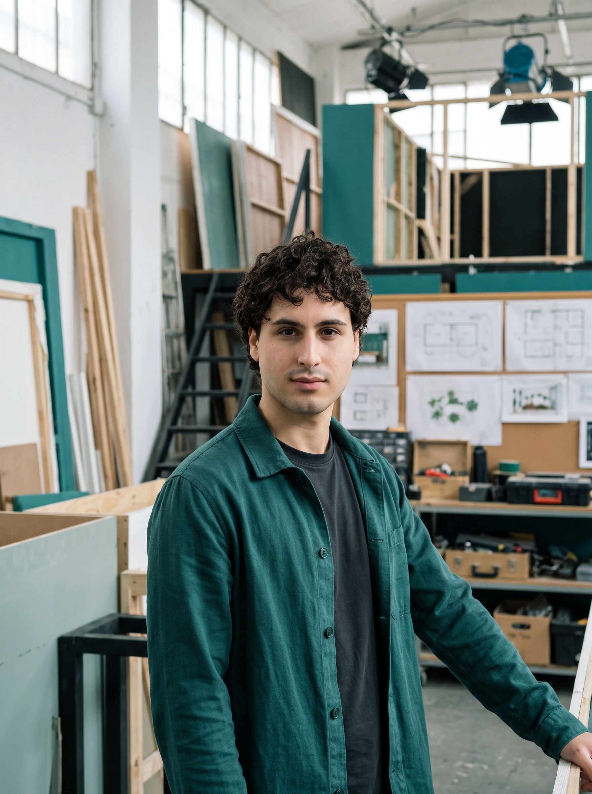
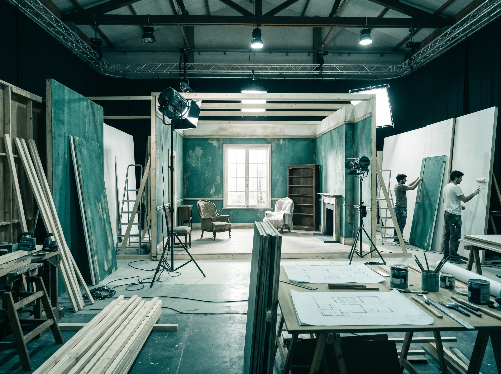
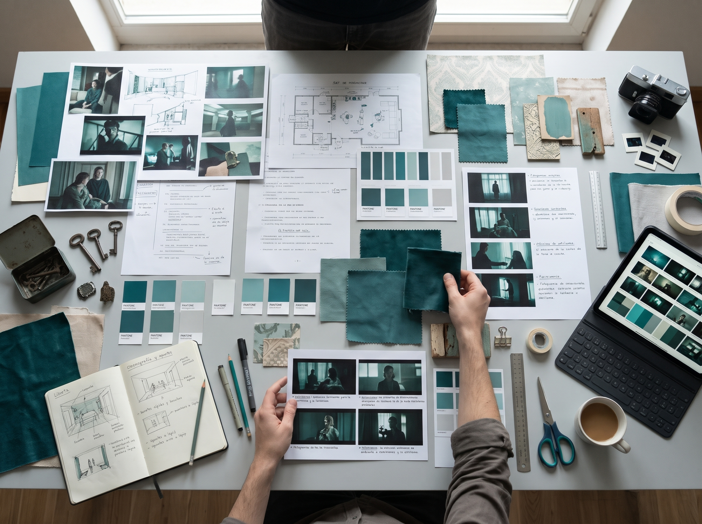
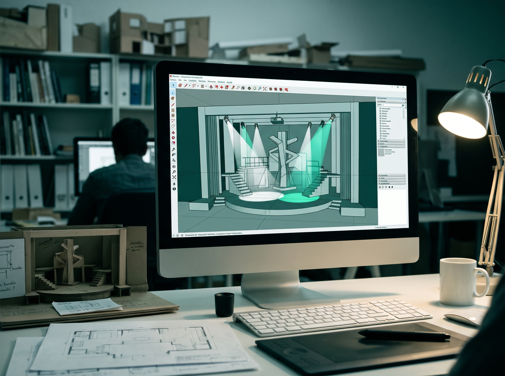

Grado en Comunicación Audiovisual
Universidad de Alcalá
2023 - 2027
Especialización práctica en Dirección de Arte, Diseño de Producción y narrativa visual.
Estudiante de Comunicación Audiovisual
Especialista en el diseño de espacios, dirección de arte y creación de atmósferas inmersivas para cine, teatro y televisión. Transformo conceptos narrativos en entornos tangibles.
Ver mis proyectos
Soy Pablo Nacarino, estudiante de Comunicación Audiovisual. A lo largo de mi formación en el ámbito audiovisual, he descubierto mi verdadera vocación: la escenografía y la dirección de arte.
Me apasiona cuidar cada detalle del set para que el entorno cuente la historia por sí solo. Combino mi visión audiovisual integral con habilidades técnicas en diseño, modelado 3D, ambientación y construcción de decorados, buscando siempre generar experiencias visuales memorables.
Universidad de Alcalá
2023 - 2027
Especialización práctica en Dirección de Arte, Diseño de Producción y narrativa visual.
IES Antonio Machado
2021 - 2023
Cortometraje de Ficción Universitario.
2026
Diseño y construcción de decorados en plató, desglose de guion artístico, búsqueda de localizaciones, selección de paleta de color y gestión integral de utilería y atrezo.
Compañía de Teatro Independiente
2025
Asistencia técnica en el montaje y desmontaje de escenarios, pintura escénica, texturizado de elementos y ambientación del espacio teatral.
Consulta algunos de los proyectos y experiencias desarrollados enfocados en el diseño de espacios.
| Año | Proyecto | Rol | Herramientas |
|---|---|---|---|
| 2026 | Cortometraje "El Umbral" | Diseño de Set | SketchUp / Construcción |
| 2025 | Obra Teatral "Raíces" | Ayudante Escenografía | AutoCAD / Taller |
| 2025 | Videoclip Musical | t Dirección de Arte | Photoshop / Utilería |
| 2024 | Proyecto de Espacios | Modelado 3D | Blender |

Desarrollo y construcción de decorado
Año: 2026
Desarrollo conceptual, diseño de planos en planta y alzado, y construcción física del decorado principal. Uso de técnicas de carpintería básica, pintura escénica y atrezo para crear una atmósfera de época.
Ver proyecto
Ambientación y estilismo visual
Año: 2025
Creación de la identidad visual del proyecto: diseño de la paleta de colores, selección de utilería, texturas y coordinación del montaje del set de rodaje bajo luz artificial controlada.
Ver proyecto
Proyecto de Espacios Escénicos
Año: 2025
Diseño y modelado 3D de un escenario teatral interactivo. Previsualización de volúmenes, tiros de cámara y pruebas de iluminación utilizando Blender y SketchUp antes de la fase de construcción.
Ver proyectoEmail: pablo.nacarino@edu.uah.es
Instagram: @pablo.nacarino
LinkedIn: Mi perfil